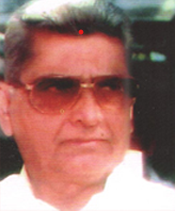
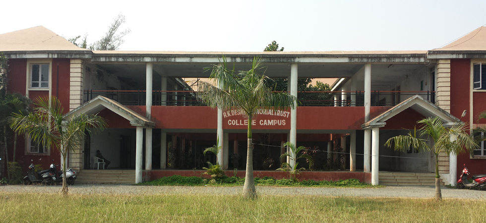

The Ramanlal Kunvarji Desai Memorial Trust has completed fourteen successful years after launching a new programe of establishing an educational institution for providing special technical courses for the youth of this growing industrial as well as agricultural rural area of VAPI Umbergaon region. Presently the trust is running colleges of Bachelor of Computer Application (BCA), Bachelor of Business Administration (BBA), Bachelor of Commerce (B.com), Bachelor of Education (B.Ed.) and Primary Teaching courses which will train the youth to meet the challenges of E-Commerce and Information technology based subjects. The trust is guided by the principles of late Shri Ramanlal Kunvarji Desai "Achchhariwala", a well-known leader of Valsad District. Late shri Ramnbhai was actively associated with number of social and educational instititions and serve them as President. It was his cherished dream to provide technical education and training to the youth of his beloved area to meet the challenges of this generation and hence his educational complex is being dedicated in the memory of this great social worker
